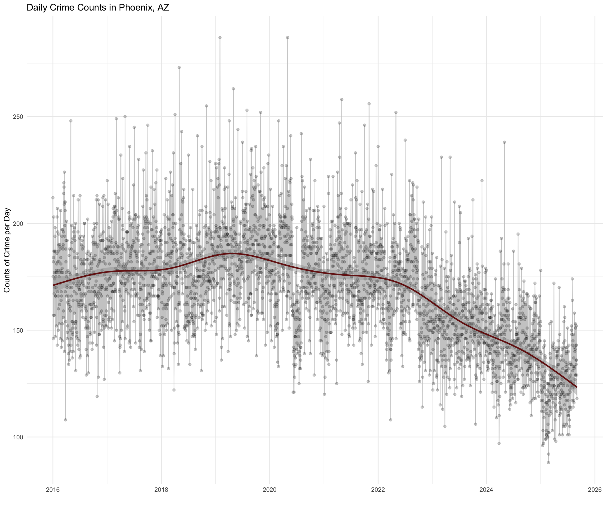

What is going on with crime in Phoenix?
12 March, 2024
If we want to know what is going on with crime in Phoenix, we can take a look at the Crime Data from the data portal. This file contains incidents reported to the Phoenix Police Department. The city updates the file at 11am every day and it contains data beginning November 2015 up to 7 days before the posting date.
To the data!
Daily trend
Let’s pull the most recent data for crime incidents from the site.
The data are reported as UCR crime classifications and have geographic information (block address, zip) as well as the date and time of the incident. As of March, 2024, there were 530,664 crime incidents with complete data from 11/2015 to within a week of the current date.
Let’s start by looking at the daily counts of crime from when the data are first available (i.e. November 2015) and look at the trend up to the current date.

The plot shows a fairly stable daily count of crimes.
But, a marked decline towards the end of 2019.
Since the end of 2019 through the beginning of 2021, crime incidents
have been trending down in Phoenix.
For a more in-depth examination of crime in 2020 and how it differed from 2019, check out this analysis.
Importantly, since the end of 2019, there has been an overall decrease in the daily counts of crime incidents. Since the beginning of 2022, there has been a consistent and sizable decrease in crime incidents.
Getting the data (code)
# set the url where the data are located.
url <- "https://www.phoenixopendata.com/dataset/cc08aace-9ca9-467f-b6c1-f0879ab1a358/resource/0ce3411a-2fc6-4302-a33f-167f68608a20/download/crime-data_crime-data_crimestat.csv"
# pull in the csv file.
crime.data <- read.csv( url, as.is = TRUE, header = TRUE )
# drop cases missing on date.
crime.data <- na.omit( crime.data )
# take a look at the data.
head( crime.data ) Preprocessing the data (code)
Now that the data are in the workspace, let’s clean up the date and
the crime categories to make plotting them fairly easy. To do so, I am
drawing from a lab
from ASU’s Foundations of Data Science Part
I course in the Program Evaluation and Data Analytics. See the
“Working with Dates” section of the site. We will use the
strptime() and format() functions here.
# The date and time variable is a character string.
head( crime.data$OCCURRED.ON )## [1] "11/01/2015 00:00" "11/01/2015 00:00" "11/01/2015 00:00"
## [4] "11/01/2015 00:00" "11/01/2015 00:00" "11/01/2015 00:00"is.character( crime.data$OCCURRED.ON )## [1] TRUE# Convert the string dates to a date format code.
date.vec <- strptime( crime.data$OCCURRED.ON, format="%m/%d/%Y %H:%M" )
head( date.vec )## [1] "2015-11-01 MST" "2015-11-01 MST" "2015-11-01 MST" "2015-11-01 MST"
## [5] "2015-11-01 MST" "2015-11-01 MST"tail( date.vec )## [1] "2024-02-29 23:05:00 MST" "2024-02-29 23:05:00 MST"
## [3] "2024-02-29 23:30:00 MST" "2024-02-29 23:35:00 MST"
## [5] "2024-02-29 23:37:00 MST" "2024-02-29 23:41:00 MST"# Now, let's use the format() function to create several objects based on the date and time.
crime.data$year <- format( date.vec, format="%Y" )
crime.data$month <- format( date.vec, format="%B" )
crime.data$day365 <- format( date.vec, format="%j" )
crime.data$week <- format( date.vec, format="%V" )
# Drop cases for the most recent month since the low counts will through off the scale.
crime.data <- crime.data[ ! (
crime.data$month == format( Sys.Date(), format="%B" ) &
crime.data$year == format( Sys.Date(), format="%Y" )
) , ]Plotting the data (code)
# Now, let's use dplyr and tidyr to get the data in a format where we can look at the time series.
library( dplyr )
library( tidyr )
# Use dplyr() to create an object that is the daily count of crimes.
crimes.by.day <-
crime.data %>%
select( year, month, day365 ) %>%
filter( !is.na( day365 ) ) %>%
group_by( year, month, day365 ) %>%
summarize( counts = n() ) %>%
ungroup() %>%
mutate( day.time = seq( 1, length( counts ) ) ) %>%
select( counts, day.time ) %>%
mutate( days =
seq(
as.Date( head( strptime( crime.data$OCCURRED.ON, format="%m/%d/%Y %H:%M" ) ) )[1],
as.Date( tail( strptime( crime.data$OCCURRED.ON, format="%m/%d/%Y %H:%M" ) ) )[6],
length.out = length( counts ) ) ) %>%
arrange( day.time )
# Finally, let's take a look using ggplot2.
library( ggplot2 )
# Add the dates for the plot.
crimes.by.day <- as.data.frame( crimes.by.day )
# Now let's plot it!
crimes.by.day %>%
ggplot( aes( days, counts ) ) +
geom_line( color = "grey80" ) +
geom_point( alpha = 1/5, color = "black" ) +
labs( x = "", y = "Counts of Crime per Day" ) +
ggtitle( "Daily Crime Counts in Phoenix, AZ" ) +
geom_smooth( color = "darkblue", span = 0.2 ) +
scale_y_continuous( label = comma ) +
theme_minimal() What about rates?
Rates of crime
The daily count view is useful, but it might help if we make two changes:
First, we should break it down by year and month. This adjustment corrects for the seasonality of crime. One way to show this seasonal variation in crime incidents is to plot the monthly incidents for each year. Note that for 2024, the line stops the month before March, as that is the last month of complete data from the portal.
Second, we should adjust the counts to be rates of incidents of crime. This will adjust for differences in the population of Phoenix from 2016-2024. The crime incident rate is calculated as the count of crimes divided by the population size, then multiplied by 100,000. This then tells us how many incidents of crime occur per 100,000 people in the population.
Creating rates (code)
Let’s pull population data from the Census Bureau.
The site lists Excel files with estimates of population for incorporated
places. Since this is an .xlxs file, we will use the
openxlxs package.
We will work with two files:
Let’s pull these estimates in and get the data for Phoenix.
library( openxlsx )
# get years 2016-2019
pop.data.2016.2019 <- read.xlsx(
"https://www2.census.gov/programs-surveys/popest/tables/2010-2019/cities/totals/SUB-IP-EST2019-ANNRES-04.xlsx",
colNames = TRUE,
startRow = 4
)
# Find the row with the data for Phoenix
grep("Phoenix", pop.data.2016.2019[,1])## [1] 55# It is the 55th row in the object
phoenix.pop.2016.2019 <- pop.data.2016.2019[55,]
phoenix.pop.2016.2019## X1 Census Estimates.Base 2010 2011 2012 2013
## 55 Phoenix city, Arizona 1445632 1446691 1449038 1469796 1499274 1526491
## 2014 2015 2016 2017 2018 2019
## 55 1555445 1583690 1612199 1633560 1654675 1680992# We only need the data for 2016-2019
phoenix.pop.2016.2019 <- phoenix.pop.2016.2019[-c(1:9)]
phoenix.pop.2016.2019## 2016 2017 2018 2019
## 55 1612199 1633560 1654675 1680992# Repeat these steps for the 2020-2021 data
pop.data.2020.2021 <- read.xlsx(
"https://www2.census.gov/programs-surveys/popest/tables/2020-2021/cities/totals/SUB-IP-EST2021-POP-04.xlsx",
colNames = TRUE,
startRow = 4
)
grep("Phoenix", pop.data.2020.2021[,1])## [1] 55phoenix.pop.2020.2021 <- pop.data.2020.2021[55,]
phoenix.pop.2020.2021## X1 X2 2020 2021
## 55 Phoenix city, Arizona 1607739 1611345 1624569phoenix.pop.2020.2021 <- phoenix.pop.2020.2021[-c(1:2)]
phoenix.pop.2020.2021## 2020 2021
## 55 1611345 1624569# combine the data into a single object
phoenix.pop <- cbind( phoenix.pop.2016.2019, phoenix.pop.2020.2021 )
phoenix.pop## 2016 2017 2018 2019 2020 2021
## 55 1612199 1633560 1654675 1680992 1611345 1624569Ok! We have our population data. But, what about years after 2021? These are not reported yet. So, we need to fill that in. We could do this various ways, but for ease, let’s just add the difference in growth from the prior year.
# Missing 2022 and 2023 and 2024
# Add the difference for each year until you get the actual demographic data
phoenix.pop$"2022" <- phoenix.pop$"2021" + phoenix.pop$"2021" - phoenix.pop$"2020"
phoenix.pop$"2023" <- phoenix.pop$"2022" + phoenix.pop$"2022" - phoenix.pop$"2021"
phoenix.pop$"2024" <- phoenix.pop$"2023" + phoenix.pop$"2023" - phoenix.pop$"2022"
# now we coerce the data to be numeric to use it below
phoenix.pop.data <- as.numeric( phoenix.pop )
phoenix.pop.data## [1] 1612199 1633560 1654675 1680992 1611345 1624569 1637793 1651017 1664241# now, calculate the crime rate. Crime rate is calculated as the count of crimes divided by the population size, then multipled by 100,000.
crime.rates <- as.data.frame( crimes.by.month )
for ( i in 1: dim( crime.rates )[2] ){
crime.rates[,i] <- ( crime.rates[,i] / phoenix.pop.data[i] ) * 100000
}
# calculate the crime rate by year.
crime.rates.year <- as.data.frame( crimes.by.year )
for ( i in 1: dim( crime.rates.year )[1] ){
crime.rates.year[i,2] <- ( crime.rates.year[i,2] / phoenix.pop.data[i] ) * 100000
}What about crime by month?
Seasonality

The plot showing the monthly rates by year helps us visualize the data better. Note that the current year, 2024, is missing a label because the year is incomplete. There are a few important patterns we can take from the plot:
First, the trend for 2020 is unusual relative to other years. Particularly for the period of March-June. For a more elaborate discussion of this trend, see this analysis.
Second, relative to past years, more recent criminal incidents tend to be lower. For example, 2022 and 2023 both show a generally lower rate of crime incidents relative to 2017-2021.
Third, there has been a considerable decline in crime incidents toward the end of 2022 that has continued into 2023.
Reworking the data to monthly incidents (code)
This takes some reworking of the data.
First, rather than collapsing by day, we want to record counts by month.
Second, we need to create a
ts()object. That is, we need to create a time series object using thets()function. We will also use theggseasonplot()from theforecastpackage.
# Back to dplyr! Let's create an object that is monthly counts and sorted by year.
crimes.by.month <-
crime.data %>%
select( year, month ) %>%
filter( year != 2015 ) %>%
filter( !is.na( year ) ) %>%
group_by( year, month ) %>%
summarize( counts = n() ) %>%
spread( year, counts ) %>%
arrange( match( month, month.name ) ) %>%
select( !month )
# Now, lets use the ts() function to create a time series object.
library( forecast )
monthly.crime.rate.by.year <- ts(
matrix( as.matrix( crime.rates ), ncol = 1 ),
start=c( 2016, 1 ),
end=c( as.numeric( tail( names( crime.rates ), n=1 ) ), 12 ), frequency=12
)Plotting the data (code)
library( ggplot2 )
library( forecast )
monthly.crime.rate.by.year %>%
ggseasonplot(
year.labels = TRUE,
continuous = FALSE,
main = "Plot of Monthly Crime Rate by Years for Phoenix, AZ",
col = colorRampPalette(c("aquamarine2", "firebrick"))( dim( crime.rates )[2] ) ) +
scale_y_continuous( label = comma ) +
geom_line( size = 1.2 ) +
theme_minimal() What about crime by year?
Seasonality

Plotting the data (code)
library( ggplot2 )
library( forecast )
crime.rates.year %>%
# drop the current year because it distorts the graph
filter( year != as.numeric( format( Sys.Date(), format="%Y" ) ) ) %>%
ggplot( aes( year, counts, group = 1 ) ) +
geom_line( color = "black") +
geom_point( color = "aquamarine4" ) +
labs( x = "", y = "Rate of Crime per Year" ) +
ggtitle( "Plot of Crime Rate by Year in Phoenix, AZ" ) +
scale_y_continuous( label = comma ) +
theme_minimal() Next steps…
Note that these plots represents all types of crimes. For a more elaborate discussion of various crime types, check out this analysis.
Back to Open Criminology Phoenix page
Please report any needed corrections to the Issues page. Thanks!